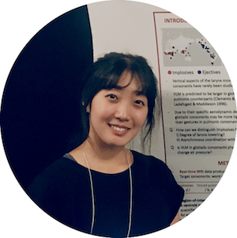

Miran Oh
I'm a Ph.D candidate in the Department of Linguistics at University of Southen California. My research interests are speech production and articulatory phonetics/phonology. My research examines gestural organization and timing under prosodic modulations in speech articulation. I am an active member of the USC Phonetics and Phonology Group and the Speech Production and Articulation kNowledge group (SPAN), working on projects such as tracking vocal tract movements in real-time MR images.
Learn about what I do